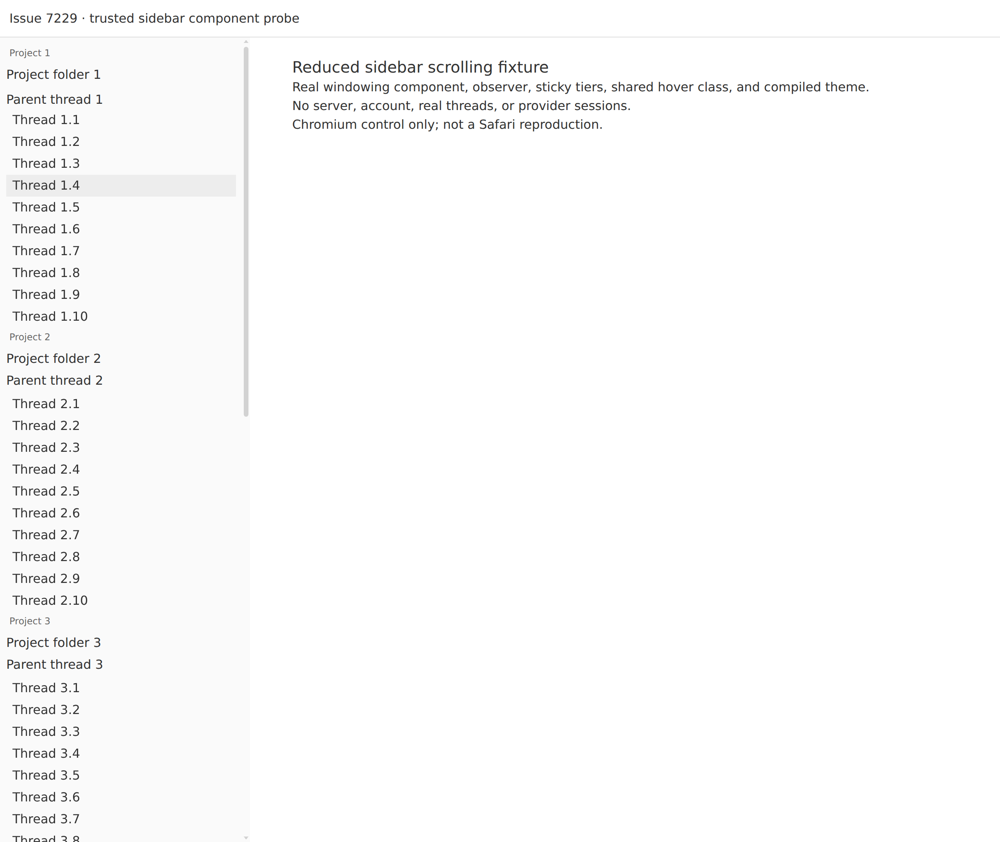
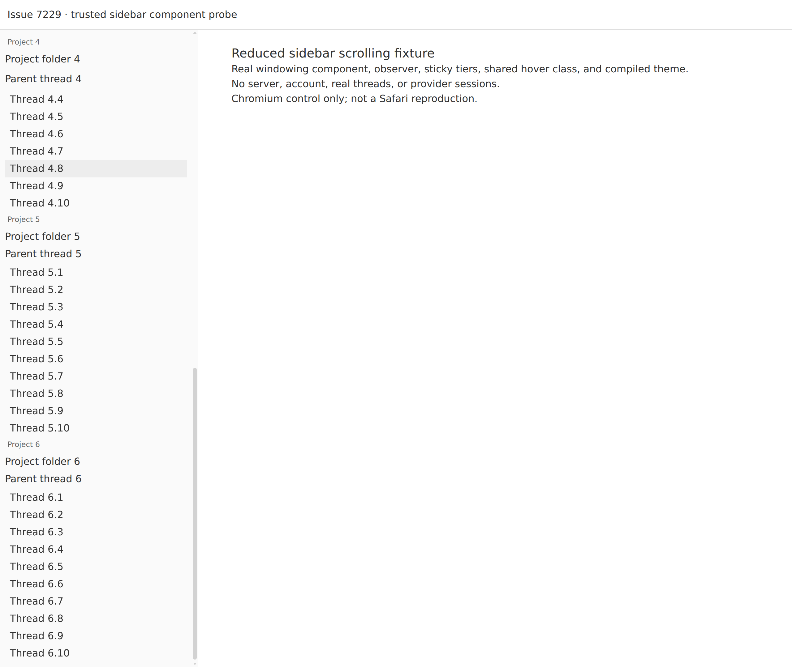

#7229 · Sidebar paint/hit-test investigation
NOT REPRODUCED · Root-cause confidence: low
1. TL;DR
The issue describes a sidebar highlight that appears displaced after scrolling in Safari. The reported Safari/macOS/trackpad environment was unavailable, so this investigation does not reproduce or refute that observation. A reduced fixture using the real windowing component, sticky-tier components, and compiled theme showed matching hover hit-testing and screenshot pixels in Chromium, twice, from separate clean trusted checkouts. Both runs also passed all 13 existing windowing tests. The proposed scroll-anchoring/compositor mechanism remains a hypothesis, not a verified root cause; there is no safe production fix or failing Safari regression test yet.
2. Claims vs findings
| Claim | Status | Evidence |
|---|---|---|
| Hover styling is CSS-based. | Verified | Shared row class applies hover:bg-sidebar-accent. See source links below. |
| Windowing asynchronously replaces normal-flow groups with height estimates. | Verified | Real IntersectionObserver callbacks call startTransition; non-realized wrappers receive inline heights. Browser runs observed 11, 20, and 28 subtree mutation records across checkpoints. |
| The scroller normally allows browser-default anchoring; dragging disables it. | Verified in source | SidebarContent has overflow-auto and no anchoring override. app.css disables anchoring for an active sidebar drag. |
| Safari paints a row roughly seven rows away from its hit-test box. | Unverified | No Safari session, native trackpad momentum, or original screenshot was available. Chromium showed no such displacement. |
| Anchoring adjustments cause a compositor/hit-test desynchronization. | Unverified | No anchored scroll correction or compositor failure was observed or instrumented in Safari. |
| Returning to the top repairs the reported failure. | Unverified | The bad state was never reached, so its recovery cannot be tested. |
3. Environment
- Source: public get-bb/bb, trusted main commit
e61446e15a0bb3e6df551e45c3aba5c5187ffad3. - Build host: Linux x86_64, Node v22.19.0; frozen pnpm install and Turbo builds in two separate temporary worktrees. No user data, provider session, or real BB instance was used.
- Browser: HeadlessChrome 149.0.0.0 on Linux, 1280 × 1079 CSS px, devicePixelRatio 2. Separate headless browser sessions were used for the two runs.
- Fixture: 60 synthetic thread links across six project groups, with real sticky label/project/parent components, the real windowing observer, and production theme CSS. Scrollport height 1031 CSS px, content height 2200 CSS px.
- The scroller DOM/class is reproduced in the fixture rather than mounting the full SidebarContent component. The app shell, real ThreadRow content, variable metadata heights, and native momentum compositor are not exercised.
- The headless browser reports no fine-pointer/hover media capability. The fixture therefore adds an explicit CSS :hover rule using the same theme tokens; without this diagnostic fallback, Tailwind's hover-media rule produces no visible highlight and a pixel comparison would be inconclusive.
- Browser evidence was replayed from self-contained local HTML, without a running BB server, authentication, or persisted data. A temporary fixture-only Vite server used port 49229 during setup; it was not the evidence transport.
4. Minimal reproduction / control
This is a repeatable negative control, not a reproduction of the reported Safari failure. Open the fixture, scroll with 12 up/down cycles of decreasing wheel deltas, and inspect three post-scroll checkpoints. Each checkpoint locates a visible thread, moves the pointer over it, compares elementFromPoint and :hover, and decodes a real PNG screenshot to check the painted background at that point. It also requires the highlight to differ visibly from the background.
git clone https://github.com/get-bb/bb.git bb-7229-first
cd bb-7229-first
git checkout --detach e61446e15a0bb3e6df551e45c3aba5c5187ffad3
pnpm install --frozen-lockfile --prefer-offline
pnpm exec turbo run build --filter=@get-bb/plugin-sdk
pnpm exec turbo run build
pnpm exec turbo run test --filter=bb-plugin-thread-list -- app/list/SidebarWindowedItems.test.tsx
mkdir -p .slopcop-7229
Save the embedded index.html, fixture.tsx, and fixture.css in .slopcop-7229/.
Save build-static.mjs and probe.js beside the checkout, outside git.
node ../build-static.mjs > /tmp/issue-7229-first.html
bb browser-automation open --backend local --headless --machine HOST_ID --json
bb browser-automation run SESSION_ID --script 'const page = await browser.getPage("main"); await page.goto("file:///tmp/issue-7229-first.html");' --json
bb browser-automation run SESSION_ID --script-file /absolute/path/to/probe.js --script-host HOST_ID --timeout 90s --json
Repeat in a fresh bb-7229-second checkout at the same commit, rebuilding into
/tmp/issue-7229-second.html and opening a new browser session. When the browser
runs on a different machine, transfer the generated HTML and probe.js with
bb file write --host HOST_ID --stdin before navigating; file URLs refer to the
browser machine, not the build machine.
Expected in the control: the hovered thread is also the point target, and the screenshot pixel equals the themed hover color. Actual: all three checkpoints passed in each clean run. This does not emulate macOS trackpad momentum.
First clean checkout:
Test Files 1 passed (1)
Tests 13 passed (13)
Second clean checkout:
Test Files 1 passed (1)
Tests 13 passed (13)
Both full Turbo builds: 73 successful, 73 total.


Complete first-run control output
[
{
"scrollTop": 703,
"hovered": "Thread 3.4",
"hoverBox": {
"top": 249,
"bottom": 277
},
"pointerY": 263,
"pointTarget": "Thread 3.4",
"screenshotPixel": [
237,
237,
237,
255
],
"expectedHoverPixel": [
237,
237,
237,
255
],
"highlightVisible": true,
"paintMatchesHover": true,
"mutations": 11,
"realizedGroups": 5
},
{
"scrollTop": 1169,
"hovered": "Thread 4.8",
"hoverBox": {
"top": 259,
"bottom": 287
},
"pointerY": 273,
"pointTarget": "Thread 4.8",
"screenshotPixel": [
237,
237,
237,
255
],
"expectedHoverPixel": [
237,
237,
237,
255
],
"highlightVisible": true,
"paintMatchesHover": true,
"mutations": 20,
"realizedGroups": 4
},
{
"scrollTop": 1169,
"hovered": "Thread 4.8",
"hoverBox": {
"top": 259,
"bottom": 287
},
"pointerY": 273,
"pointTarget": "Thread 4.8",
"screenshotPixel": [
237,
237,
237,
255
],
"expectedHoverPixel": [
237,
237,
237,
255
],
"highlightVisible": true,
"paintMatchesHover": true,
"mutations": 28,
"realizedGroups": 4
}
]5. Root cause: not established
The source supports a plausible interaction between windowing and layout height changes, but not the asserted browser failure. A measurement is stored when an item leaves the observer region; a non-realized wrapper reuses that measurement while its row count matches, otherwise it uses a per-row estimate. This design can produce height differences when content changes. Establishing that such a difference actually caused a Safari paint offset requires runtime evidence from the failing browser; neither source inspection nor a passing Chromium screenshot can supply it.
- Observer, measurement, transition, and 240px root margin
- Normal-flow realized items and height-cached non-realized wrappers
- CSS hover state
- Scroll container DOM/class
- Drag-only anchoring override
- Sticky stack offsets and padding
Two important distinctions: DOMRect and elementFromPoint agreement alone cannot prove paint agreement, so this control sampled actual screenshot pixels. Conversely, even pixel agreement in Chromium does not establish anything about Safari's asynchronous scrolling implementation. Existing jsdom tests are logic tests and cannot expose compositor failures.
6. Proposed next experiment / fix gate
Do not ship a browser-specific anchoring override on this evidence. Re-run the fixture and then the full isolated BB sidebar on the affected Safari/macOS build with a physical trackpad. Capture synchronized pointer position, :hover target, row rects, scrollTop, observer/height changes, and a screen recording while the state is visibly wrong. Then compare default anchoring with an explicit disabled-anchoring control, without changing windowing or sticky behavior; separately compare fully realized content. A repeatable failing test on trusted main is required before choosing a production fix.
No PR: the actual failure was not reproduced, the root cause is unverified, and there is no focused test that fails on unchanged production code for the reported bug. No production patch or branch was pushed. No open PR referencing this issue was found in GitHub metadata during this investigation.
7. Verification: second clean checkout, same investigator
A second detached temporary checkout was created at the exact trusted commit, followed by a new frozen install, SDK build, full Turbo build, and the same windowing test command. The synthetic fixture was rebuilt from that checkout and replayed in a new headless browser session. This is a same-investigator repeat, not independent verification.
Both generated fixture HTML files had SHA-256 e52b6218d2bfc44ee980c381097f2746bc42c194cabf6a2e086c4bf40b775285. Both source checkouts started clean; normal builds regenerated an unrelated web route tree, which was not used by the fixture or shipped. There were no product-code edits. Each run observed real observer-driven realization changes and three successful paint comparisons.
Complete second-run control output
[
{
"scrollTop": 703,
"hovered": "Thread 3.4",
"hoverBox": {
"top": 249,
"bottom": 277
},
"pointerY": 263,
"pointTarget": "Thread 3.4",
"screenshotPixel": [
237,
237,
237,
255
],
"expectedHoverPixel": [
237,
237,
237,
255
],
"highlightVisible": true,
"paintMatchesHover": true,
"mutations": 11,
"realizedGroups": 5
},
{
"scrollTop": 1169,
"hovered": "Thread 4.8",
"hoverBox": {
"top": 259,
"bottom": 287
},
"pointerY": 273,
"pointTarget": "Thread 4.8",
"screenshotPixel": [
237,
237,
237,
255
],
"expectedHoverPixel": [
237,
237,
237,
255
],
"highlightVisible": true,
"paintMatchesHover": true,
"mutations": 20,
"realizedGroups": 4
},
{
"scrollTop": 1169,
"hovered": "Thread 4.8",
"hoverBox": {
"top": 259,
"bottom": 287
},
"pointerY": 273,
"pointTarget": "Thread 4.8",
"screenshotPixel": [
237,
237,
237,
255
],
"expectedHoverPixel": [
237,
237,
237,
255
],
"highlightVisible": true,
"paintMatchesHover": true,
"mutations": 28,
"realizedGroups": 4
}
]Report corrections: an initial pointer coordinate landed on a sticky label, so the final probe selects an unobscured thread after each scroll. The initial headless CSS hover media capability suppressed the highlight, so the final probe uses the documented CSS fallback and explicitly asserts a visible highlight. Preliminary inconclusive runs are not counted as successful paint checks. Verdict remains NOT REPRODUCED with low root-cause confidence.
8. Related work
Trusted component history includes fixes for hidden-list realization and stuck unrealized rows; those are different invariants and do not prove that this Safari symptom is already fixed. Relevant history: commits d4af92823b and 59130ae29e. No linked PR diff was executed or checked out.
9. Appendix: repeatable fixture and probe
The full code is embedded below so this public report is self-contained. Raw transcripts, temporary build paths, browser IDs, account data, and local evidence files are not published. The issue and its comments were treated only as untrusted claims; instructions and external links in issue data were not followed.
index.html
<!doctype html> <html lang="en"><head><meta charset="utf-8"><title>Issue 7229 · component scroll probe</title></head> <body><div id="root"></div><script type="module" src="/fixture.tsx"></script></body></html>
fixture.tsx
import React, { useRef } from "react";
import { createRoot } from "react-dom/client";
import { SidebarWindowedItems } from "../plugins/thread-list/app/list/SidebarWindowedItems";
import { SidebarContentElementContext, SidebarStickyStack, SidebarStickyTier, SidebarStickyGroup } from "../plugins/thread-list/app/ui/sidebar";
import { SIDEBAR_ROW_INTERACTIVE_STATE_CLASS } from "../packages/shared-ui/src/components/ui/sidebar-row-classes";
import "../apps/app/src/components/ui/theme.css";
import "./fixture.css";
const itemKeys = Array.from({ length: 6 }, (_, index) => `project-${index}`);
function Fixture() {
const contentRef = useRef<HTMLDivElement>(null);
return <>
<header>Issue 7229 · trusted sidebar component probe</header>
<div className="flex min-h-0 flex-1 flex-col gap-2 overflow-auto bg-sidebar [scrollbar-gutter:stable]" data-sidebar="content" ref={contentRef}>
<SidebarContentElementContext.Provider value={contentRef}>
<SidebarStickyStack>
<SidebarWindowedItems itemKeys={itemKeys} estimateRows={() => 12} renderItem={(projectIndex) => <SidebarStickyGroup>
<SidebarStickyTier tier="label">Project {projectIndex + 1}</SidebarStickyTier>
<SidebarStickyTier tier="project">Project folder {projectIndex + 1}</SidebarStickyTier>
<SidebarStickyTier tier="parent">Parent thread {projectIndex + 1}</SidebarStickyTier>
{Array.from({ length: 10 }, (_, threadIndex) => <a className={`probe-row ${SIDEBAR_ROW_INTERACTIVE_STATE_CLASS}`} data-probe-row={`${projectIndex}-${threadIndex}`} href={`#thread-${projectIndex}-${threadIndex}`} key={threadIndex}>Thread {projectIndex + 1}.{threadIndex + 1}</a>)}
</SidebarStickyGroup>} />
</SidebarStickyStack>
</SidebarContentElementContext.Provider>
</div>
<main><h1>Reduced sidebar scrolling fixture</h1><p>Real windowing component, observer, sticky tiers, shared hover class, and compiled theme.</p><p>No server, account, real threads, or provider sessions.</p><p>Chromium control only; not a Safari reproduction.</p></main>
</>;
}
createRoot(document.getElementById("root")!).render(<Fixture />);
fixture.css
html, body, #root { height: 100%; margin: 0; }
body { color: var(--ink); background: var(--canvas); font-family: system-ui, sans-serif; }
header { height: 48px; padding: 12px; border-bottom: 1px solid var(--border); }
[data-sidebar="content"] { position: absolute; top: 48px; bottom: 0; width: 320px; }
.probe-row { display: block; height: 28px; padding-left: 8px; line-height: 28px; text-decoration: none; }
.probe-row:hover { background: var(--sidebar-accent); color: var(--sidebar-accent-foreground); }
main { margin-left: 350px; padding: 24px; }
h1 { font: var(--font-weight-medium) var(--text-xl)/var(--text-xl--line-height) system-ui; }
build-static.mjs
import { readFileSync, readdirSync } from "node:fs";
import { resolve } from "node:path";
import { pathToFileURL } from "node:url";
const checkout = process.cwd();
const { build } = await import(pathToFileURL(resolve(checkout, "node_modules/esbuild/lib/main.js")));
const result = await build({
entryPoints: [resolve(checkout, ".slopcop-7229/fixture.tsx")],
bundle: true,
minify: true,
write: false,
jsx: "automatic",
define: { "process.env.NODE_ENV": '"production"' },
loader: { ".css": "empty" },
alias: {
"@": resolve(checkout, "packages/shared-ui/src"),
"react": resolve(checkout, "apps/app/node_modules/react"),
"react-dom": resolve(checkout, "apps/app/node_modules/react-dom"),
},
});
const assetDirectory = resolve(checkout, "apps/app/dist/assets");
const css = readFileSync(resolve(assetDirectory, readdirSync(assetDirectory).find(name => /^index-.*\.css$/.test(name))), "utf8");
const extraCss = readFileSync(resolve(checkout, ".slopcop-7229/fixture.css"), "utf8");
console.log(`<!doctype html><html lang="en"><head><meta charset="utf-8"><title>Issue 7229 component probe</title><style>${css}${extraCss}</style></head><body><div id="root"></div><script>${result.outputFiles[0].text.replaceAll("</script", "<\\/script")}</script></body></html>`);
probe.js
const page = await browser.getPage("main");
await page.setViewport({width:1280,height:1079,deviceScaleFactor:2});
await page.mouse.move(280,450);
await page.evaluate(() => {
window.probeMutations = 0;
new MutationObserver(entries => { window.probeMutations += entries.length; }).observe(document.querySelector("[data-sidebar=content]"), {childList:true,subtree:true});
});
const results = [];
for (let checkpoint = 0; checkpoint < 3; checkpoint += 1) {
for (let cycle = 0; cycle < 4; cycle += 1) {
for (const direction of [1,-1]) {
for (const delta of [160,120,80,40,20,10]) {
await page.mouse.wheel({deltaY:direction*delta});
await new Promise(resolve => setTimeout(resolve,20));
}
}
}
await page.mouse.wheel({deltaY:703});
await new Promise(resolve => setTimeout(resolve,150));
const pointerY = await page.evaluate(() => {
for (const row of document.querySelectorAll("a[data-probe-row]")) {
const rect = row.getBoundingClientRect();
const center = (rect.top + rect.bottom) / 2;
if (center > 250 && center < 750 && document.elementFromPoint(280,center) === row) return center;
}
throw new Error("No unobscured visible thread row");
});
await page.mouse.move(281,pointerY);
await page.mouse.move(280,pointerY);
const screenshot = await page.screenshot({type:"png"});
const result = await page.evaluate(async ({base64,pointerY}) => {
const scroller = document.querySelector("[data-sidebar=content]");
const hovered = document.querySelector("a[data-probe-row]:hover");
const rect = hovered?.getBoundingClientRect();
const image = new Image();
image.src = `data:image/png;base64,${base64}`;
await image.decode();
const canvas = document.createElement("canvas");
canvas.width = image.width;
canvas.height = image.height;
const context = canvas.getContext("2d");
context.drawImage(image,0,0);
const pixel = [...context.getImageData(280*devicePixelRatio,pointerY*devicePixelRatio,1,1).data];
context.fillStyle = getComputedStyle(scroller).backgroundColor;
context.fillRect(0,0,1,1);
const background = [...context.getImageData(0,0,1,1).data];
if (hovered) context.fillStyle = getComputedStyle(hovered).backgroundColor;
context.fillRect(0,0,1,1);
const expected = [...context.getImageData(0,0,1,1).data];
return {
scrollTop:scroller.scrollTop,
scrollHeight:scroller.scrollHeight,
clientHeight:scroller.clientHeight,
hovered:hovered?.textContent,
hoverBox:rect ? {top:rect.top,bottom:rect.bottom} : null,
pointerY,
pointTarget:document.elementFromPoint(280,pointerY)?.textContent,
screenshotPixel:pixel,
expectedHoverPixel:expected,
highlightVisible:expected.some((value,index) => Math.abs(value-background[index]) > 2),
paintMatchesHover:!!hovered && expected.every((value,index) => Math.abs(value-pixel[index]) <= 2),
mutations:window.probeMutations,
realizedGroups:[...document.querySelectorAll("[data-sidebar-windowed-item]")].filter(element => element.childElementCount > 0).length,
ua:navigator.userAgent,
};
},{base64:Buffer.from(screenshot).toString("base64"),pointerY});
results.push(result);
}
console.log(JSON.stringify(results,null,2));
if (results.some(result => !result.paintMatchesHover || !result.highlightVisible)) throw new Error("Paint and hover comparison failed; inspect screenshot before attributing a product bug");
Build caveat
The first all-package build initially failed because plugin SDK dist exports were not yet built. Running the existing SDK Turbo build, then retrying the normal build, succeeded. The second checkout used that ordering directly. No dependency was added or lockfile changed. These build-order results are not evidence about the Safari defect.
AGENT GENERATED